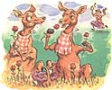

LAST LAUGH
If all you ever seem to grow in your garden are mistakes, you're not alone.
Do not ever get the idea that you're the only horticulturist (besides me)
who has had goofy things happen in the garden. In fact, I recently
conducted an extremely informal survey among my friends, and the freak episodes and misfortunes just came ...piling in.
Juanita H., California-
When we lived in Jackson (in the Sierra Nevada foothills), I planted a long row of red roses. Gorgeous! The deer loved them. In fact, they thought the roses were haute cuisine and acted accordingly. I got a lot of advice. "Spread hair on the bushes" was one of the gems. "Deer hate hair," I was told. I went to the barber shop and picked up two bags of the stuff. Spread it all over. The wind came up real strong that night and it resulted in the mother of all bad hair days. Neighbors knocked on my door, looking like badly groomed gorillas. They said: "For the love of God, don't use any more hair!" Fine, so I took another of my friend's suggestions and employed some ...well...lion urine. That's right. You could have knocked me over with a can of Essence of Lion Urine when I actually saw the stuff for sale at a nursery. Six bucks. Sprayed it all over. Neighbors knocked on my door. They didn't say anything, but they looked funny because they were wearing clothespins on their noses. I then gave up. The roses disappeared but the deer hung around just in case I tried something else. I didn't.
Sally E. R., Montana-
No more garden for me. What the weeds didn't choke the grasshoppers ate. My pal Casey and I dug up potatoes and picked peas and a few pitiful leaves of chard and carrots the size of cocktail weenies and then let the llamas in to eat everything else. They went berserk with either delight or terror, it is so hard to tell, and eventually we had to run for it. Two stimulated beasts, tootling and cavorting, were more than we could take at close range. I still have tomatoes in the greenhouse. Many of them are shaped like pears, which I don't understand. At least some little ones are turning red, which is more than I got last year, when the three or four I grew developed tomato consumption and fainted green off the vines.
Ed H., Oklahoma-
We have a friend who read in a gardening column that you could have a pest-free garden if you released a battalion of lady-bugs on your plants. So she bought a big can full of the little fellas-and as soon as she emptied the can they all flew, in formation, over to the garden next door. You just can't trust ladybugs.
Ellen S., California-
My parents had a beautiful garden in southern California. My sister and I had to work in it, and one day we were told to hunt for snails. Each of us was armed with a pail and nothing else. We would be paid a penny a snail. In half an hour it became boring, and besides, the snails persisted in climbing up the sides of the pail, so in order to save my salary I had to keep repicking the escapees and tossing them back in. Our neighbor, Mr. Robb, heard us complaining, leaned over the fence, and asked what the problem was. We told him. "What a great idea, picking snails! Did your Dad say you had to pick them in your own yard?" "No, he didn't say that," I replied. "I'll give you two cents a snail, then." So, like the loyal kids we were, we put lids on our pails and defected to where the snails were 100 percent more lucrative.
Kay T., California-
In the spring Sam Zickafoose (that's his real name) let Mother pick mushrooms in his pastureland-they grew large and plentiful and Mother loved them. We all had to go with her, but I hated the cows, the pasture, and the mushrooms. So I decided to get my sister to lodge a protest. I told her mushrooms were bad-made out of spider legs, cricket feet, toad eyes, and snail tails. She cried and went right to my mother and told on me. My sister decided she believed that mush rooms were homes for the fairies, and we had to be careful because a fairy might be sitting on one with her gossamer wings all spread out, ready to fly. So it didn't do any good. But I got even with my sister-I told her there wasn't any Santa Claus.
|
|
 |
|